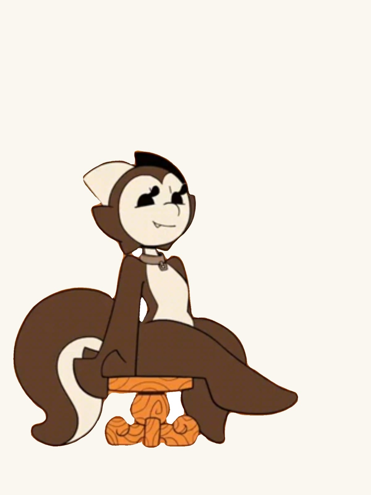
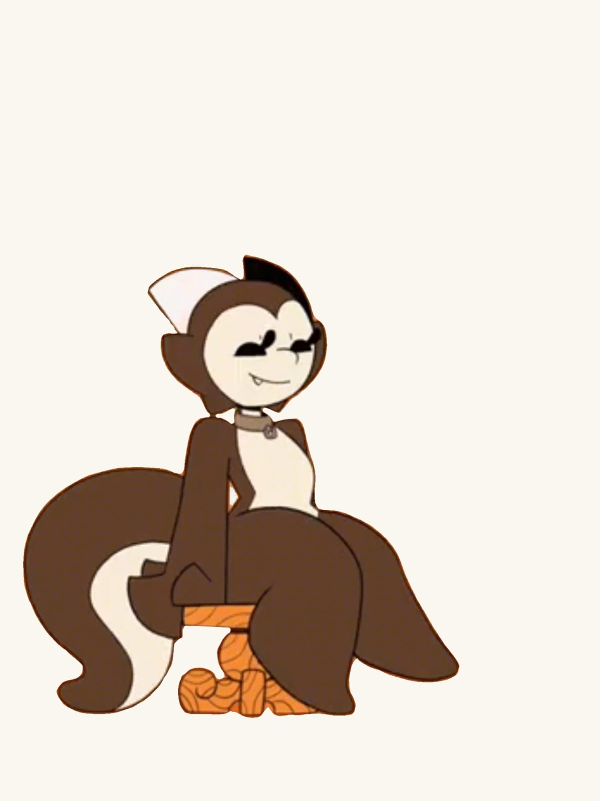
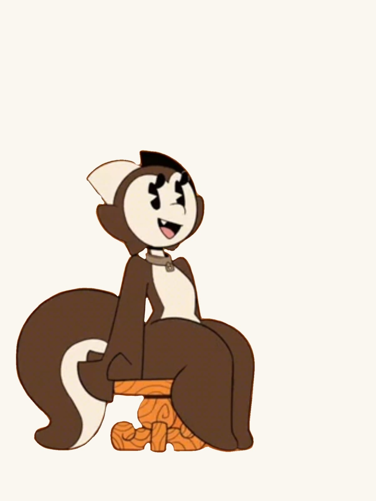

Elige el disco que mejor acompañe lo que sientes bro.



para los que remontan la unidad en una noche.
pues sientate bien! la gente aveces ocupa estar sola.
Un impulso para descanzar de forma tranquila.
Para desahogarte y soltar al lobo alfa que llevas dentro.
Las favoritas recomendadas por todos.
Un tiki dos tikis tres tikis...